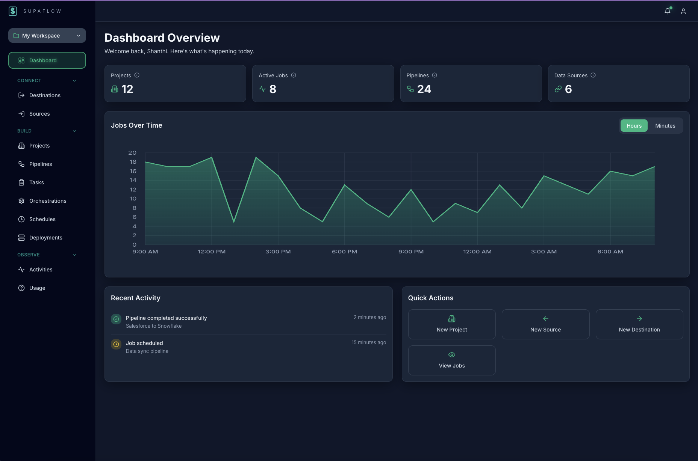

Unified data movement platform
Ingestion, transformation, activation, and orchestration - all in one place
Product Design Leadership
Problem Statement
Data engineers waste 40% of their time context-switching between 4-6 different tools to manage data pipelines. Each tool has its own design language, mental model, and workflow paradigm. How might we create a unified experience that consolidates these workflows while maintaining the power users expect?
My Role
Design Strategy Lead & Product Designer - Led design strategy while collaborating directly with the founder and engineering team, and mentoring a design intern through the product development process.
User Persona
Based on user interviews, we developed a comprehensive persona representing our core analytics engineer user.

Design Goals
- Reduce cognitive load through consistent patterns
- Create a unified mental model for data operations
- Enable progressive disclosure for complex features
- Maintain power while improving discoverability
Discovery & Research
Competitive Analysis
[Describe the competitive analysis conducted. Which competitors or tools did you study? What were the key insights? How did this inform your design strategy?]
Add image: assets/competitive-analysis.jpg
Strategy:
[Introduce the strategic pillars that guided the platform evolution. Explain why these pillars were chosen and how they address the identified pain points.]
Concept Phase
[Provide an overview of the phased approach and how each release tackled different pillars.]


Design Deep-Dive
[Pick 1-2 pillar improvements to show in detail. This section should showcase your design process and decision-making.]
[Pillar/Feature Name] Deep-Dive
Design process: [Describe the design process for this feature - research, ideation, iteration, testing.]
Add images: assets/design-process-1.jpg, assets/design-process-2.jpg
Key design decisions: [Explain the major design decisions made and the reasoning behind them.]
Constraints and trade-offs: [What constraints did you work within? What trade-offs were made and why?]
Impact & Outcomes
Quantitative Metrics
[Include adoption, usage, and satisfaction scores. Be specific with numbers where possible, while respecting NDA constraints.]
- Adoption: [Metric]
- Usage: [Metric]
- Satisfaction scores: [Metric]
Add image: assets/impact-metrics.jpg
Qualitative Feedback
"[Add user quote or testimonial]"
— User Role/Title
"[Add another user quote or testimonial]"
— User Role/Title
Business Impact
[Describe the business impact - how did these improvements affect the business? Customer retention? Revenue? Competitive positioning?]
Competitive Positioning Improvement
[How did these improvements strengthen the platform's competitive position?]
8. Reflection
What I Learned
[Reflect on key learnings from this project. What insights did you gain about user-centered design, enterprise software, or design leadership?]
What I'd Do Differently
[Honest reflection on what could have been done differently. Show growth mindset and learning from experience.]
Key Principles from This Work
[Extract key principles or frameworks that emerged from this work that can be applied to future projects.]
- [Principle 1]
- [Principle 2]
- [Principle 3]
This case study represents strategic UX work on the Analytics Data Platform, showcasing how user-centered design transforms complex enterprise software into intuitive, powerful tools.